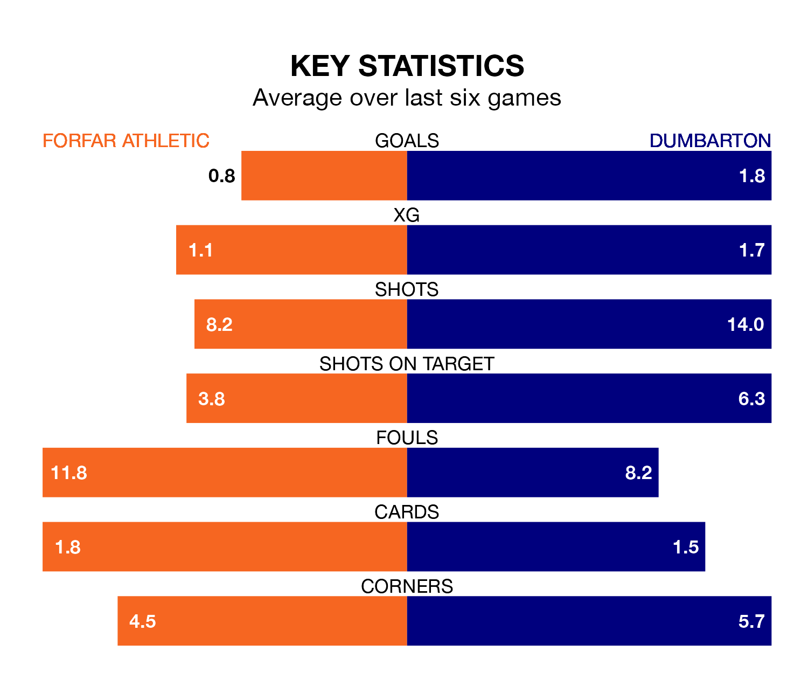

Dumbarton face a challenge to maintain their high-scoring form away against a tight Forfar Athletic defence on Saturday.
With 50 goals in 31 games, Dumbarton are the top scorers in League Two ahead of the 3pm kick-off at Station Park.
They face a Loons side who have scored 33 in 31 matches, but conceded only 36 goals, putting them third among the league's tightest defences – only Stenhousemuir and Peterhead have conceded fewer goals.
With Marc McCallum between the sticks, Forfar can rely on one of the league's safest pair of hands. He has kept 10 clean sheets in his 31 appearances this season, and only one other 'keeper – Stenhousemuir's Darren Jamieson – has been able to prevent the opposition scoring on more occasions in League Two.
In Dumbarton's net, Brett Long has five clean sheets in 14 games.
In the last 10 years, Forfar and Dumbarton have played each other on 19 occasions. Forfar won six of them, Dumbarton seven, and they drew six times.
On average, the Loons scored 1.4 goals and the Sons 1.5 in those matches.
Their last meeting was on February 10, when they played out a 2-2 draw.
The Sons are third in the table after 31 games, of which they have won 14 and drawn seven, earning 49 points.
Athletic are three places behind the away team in sixth, with seven wins and 15 draws putting them on 36 points.
The Loons are in mixed form in League Two, with one win and four draws from their last six games.
With three wins and a draw over that period, Dumbarton's form is better – they have taken 10 points from 18, compared to the hosts' seven.
Forfar's last match was on Saturday, a 1-0 loss against Spartans.
Dumbarton drew 0-0 with Stenhousemuir last time out, also on Saturday.
Updated: 16:41 (UTC), 04/04/24